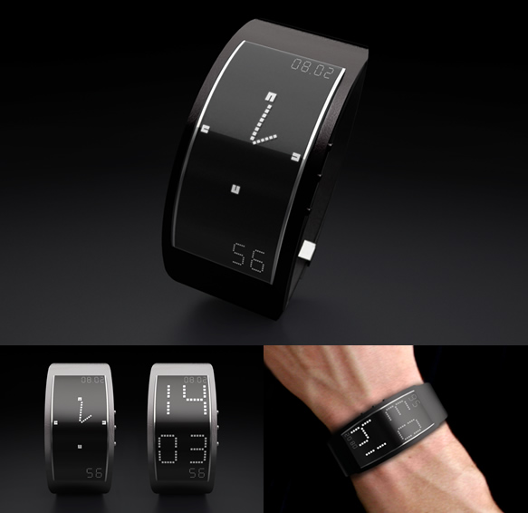

Expression Design Studio
Recent
News
<
- 

- 1/05/2012
Design your website from now!!!
Because we would to choose your website to be showed in Binus University and win million Rupiah
- 10/05/2012
New watch Concept for man in the worlds.
This watch designed specially for executive man and limited edition.
Planning, this watch only sell 500 units.
- 20/05/2012
New report from app store.
App store we recruitment people to worked with it as mobile web developer.
lets sign up now in www.appstore.com
- 30/05/2012
Need the best rendering machine to production image lke this.
Dont't miss it. We have the best solution for you.
Call me now in +6281123456